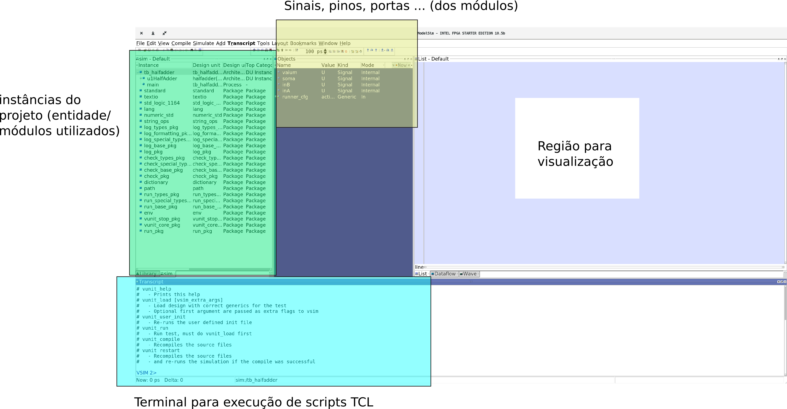
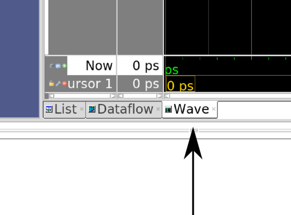
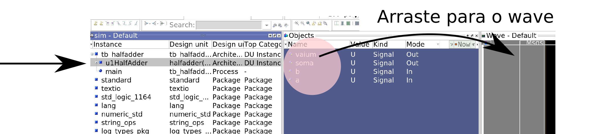
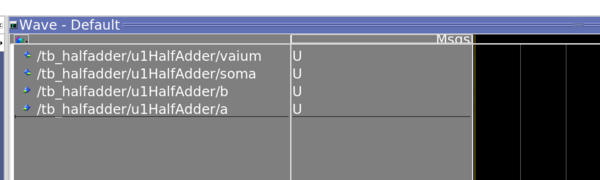
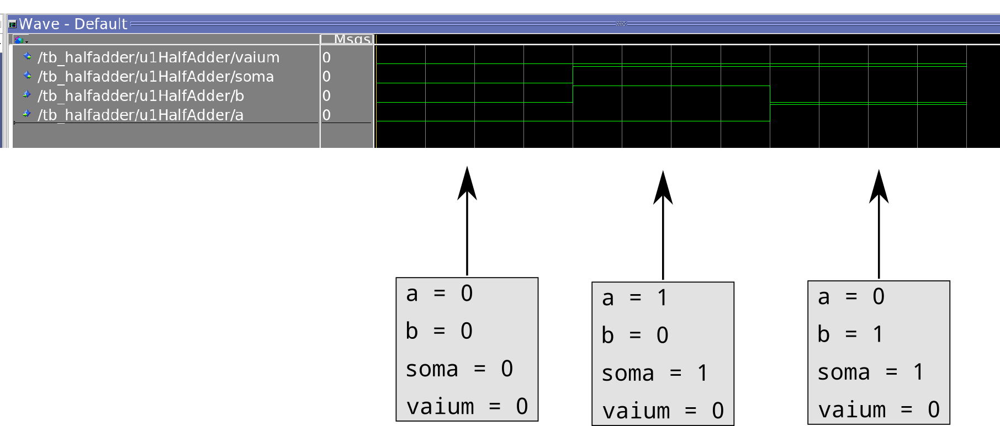

Lab 7: Visualizando simulação¶
2022-1
Material atualizado.
É muito difícil sabermos porque uma implementação em VHDL não funciona, atualmente o fluxo é: transcreve para VHDL o componente; testa; não funcionou volta para o VHDL; testa.... Será que não existe uma forma de conseguirmos visualizar o resultado do teste e com isso mudarmos a implementação em VDHL? Sim existe! Para isso será necessário invocarmos a parte gráfica do modelsim.
Na hora de invocarmos o script de teste (B-UnidadeLogicaAritmetica/testeULA.py) passe o parâmetro --gui (ou -g), como a seguir:
$ python testeULA.py --gui
Esse comando irá executar a simulação e abrir no software modelsim (toda a simulação é realizada por esse software, mas estava sendo 'mascarada' pelos scripts de teste em py).
Note
Antes de continuar, o módulo do HalfAdder.vhd já deve está implementando e testado (na forma tradicional).
modelsim¶
O modelsim não possui uma interface moderna, porém é o software de simulação de hardware mais completo e mais utilizado pela industria. 
Siga os passos a seguir para conseguirmos visualizarmos a forma de onda:
Primeiramente devemos adicionar os sinais que desejamos visualizar, no caso do HalfAdder queremos ver suas entradas (a,b) e suas saídas (soma, vaium).
Para isso clique em wave:

Tip
Caso não possua a janela wave aberta, clique em File -> Wave e a janela irá aparecer.
E depois selecione no menu das instâncias o módulo u1HalfAdder, com isso poderemos selecionar quais pinos/ sinais gostaríamos de visualizar desse bloco. Arraste todos os sinais para o wave form :

Resultando em:

Agora podemos executar a simulação, na região do script TCL execute o seguinte comando: vunit_run
VSIM > vunit_run
Podemos agora visualizar a forma de onda:

Aprimorando teste¶
Testbench (bancada de teste) é a forma utilizada para verificarmos se um projeto de HDL (VHDL, Verilog, ...) está certo, o testbench pode ser escrito em várias linguagens inclusive em VHDL.
Os TestBenchs estão localizados nas pastas dos projetos em: /tests/tst/.
No projeto C temos os seguintes testbenchs definidos (um para cada módulo a ser implementando):
/tests/tst/
tb_Add16.vhd
tb_ALU.vhd
tb_comparador16.vhd
tb_FullAdder.vhd
tb_HalfAdder.vhd
tb_Inc16.vhd
tb_inversor16.vhd
tb_zerador16.vhd
tb_HalfAdder.vhd¶
Note que na simulação do HalfAdder não testamos um dos casos de entrada: 1 + 1, esse teste está incompleto. Vamos corrigir isso!
O arquivo tb_HalfAdder faz a inclusão do módulo HalfAdder (component e port map) instanciando esse módulo para uso. No arquivo é criado estímulos na entrada do componente e verifica-se se a saída está de acordo com o que deveria ser feito.
modificando o arquivo¶
Agora vamos modificar o arquivo para inserir o teste que está faltando: 1+1, para isso inclua as linhas a seguir logo após o teste 3:
-- Teste: 4
-- 1 + 1
+inA <= '1'; inB<= '1';
+wait for 200 ps;
+assert(soma = '0' and vaium = '1') report "Falha em teste: 4" severity error;
Como isso funciona? Primeiro colocamos os valores desejados na entrada do componente:
inA <= '1'; inB <= '1';
é necessário aguardar um instante de tempo para que as portas lógicas fiquem com a saída estável (e para possibilitar a visualização na simulação):
wait for 200 ps;
Testando novamente¶
Execute novamente a simulação com o modo --gui e verifique se o módulo está se comportando corretamente:soma = 0 e vaium = 1.
Warning
Salve e submeta as alterações para o remote, apenas uma pessoa do grupo deve realizar isso.